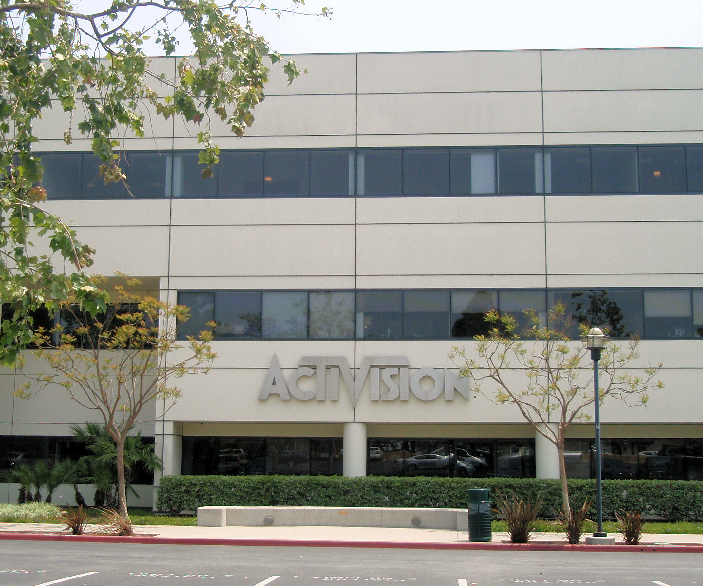

Основная инофрмация
Activision Blizzard, Inc.
Одна из крупнейших в сфере компьютерных игр и развлечений со штаб-квартирой в Санта-Монике, Калифорния.
Была основана в 2008 году в результате слияния Vivendi Games и Activision.
Ключевые фигуры
Брайан Келли (председатель)
Майк Гриффит (вице-председатель)
Бобби Котик (президент и CEO)
Слияние в Activision Blizzard (2007—2008)
В декабре 2007 Activision объявила, что компания и её активы будут объединены с разработчиком и издателем игр Vivendi Games. Vivendi Games в то время была самой известной игровой холдинговой компанией, в состав которой входили Sierra Entertainment и Blizzard Entertainment. Новая компания получила название Activision Blizzard, а штаб-квартира так и осталась в Калифорнии.
Бобби Котик из Activision был назначен в качестве нового президента и CEO компании, председателем стал Рене Пениссон из Vivendi.
Европейская комиссия разрешила слияние в апреле 2008, утверждая, что не было никаких антимонопольных вопросов к данной сделке.
8 июля 2008 Activision объявила, что акционеры договорились о слиянии, на следующий день сделка была закрыта. Сумма сделки составила $18,9 млрд долларов США.
Vivendi получила контрольный пакет акций компании в 52 %

Штаб-квартира в Санта-Монике, Калифорния, Соединённые Штаты.
Здание также служит в качестве штаб-квартиры Activision.